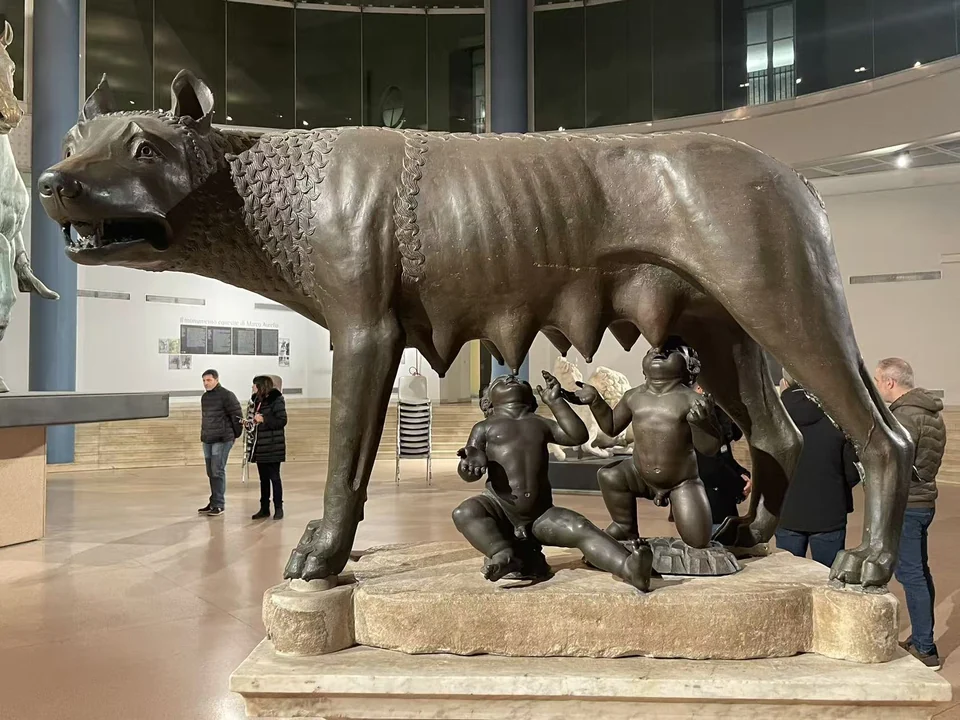

BRONZE / B06
卡比托利欧母狼（年代争议对照）
母狼与双胞胎已经成为罗马的象征，但这一熟悉图像的制作年代，并没有同样简单的答案。

- 年代
- 传统定为公元前5世纪；科学测年研究支持公元11–12世纪
- 材料
- 青铜
- 形制
- 年代争议／后世接受
- 收藏与观看
- 卡比托利欧博物馆 · 罗马
- 馆藏号
- MC1181
一个象征，两套年代
现场旧展签和部分馆方页面仍采用公元前5世纪的传统归属。另一方面，对铸芯材料的放射性碳测年支持中世纪年代，相关研究常概括为公元11—12世纪。母狼因此单列为年代争议与后世接受的对照。 [6] [9]
2025年的开放论文研究合金的微量元素和铅同位素，并讨论此前测年所得的中世纪背景；它并不是一次新的碳十四测年。不同研究所检验的是铸芯、金属或风格，理解结论之前，先分清这些证据各自在回答什么问题。 [9]
罗马的象征，也有古代之后的生命。
现场展签与背景说明


资料与来源
断代、归属与收藏资料
2019年AMS测年论文列为进一步阅读，本页的简述依据2025年开放论文对既有测年的讨论。下方双胞胎为文艺复兴时期增加，母狼的争议年代不能直接套用于整组。 [6] [8] [9]
基本资料亦参见本页现场展签；照片中的细节与馆方解释分别叙述。